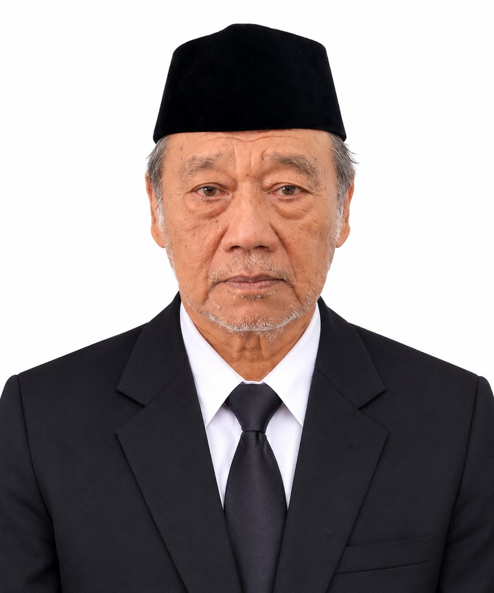

Sejarah Perkembangan
Linimasa perjalanan KSPPS BMT Barokatul Adzkia sejak awal berdiri hingga saat ini.

K.H. Mudhofir, B.A.
Sosok visioner yang menjadi pelopor berdirinya KSPPS BMT Barokatul Adzkia Kebumen, dengan semangat kebersamaan dan kepedulian terhadap umat, beliau telah meletakkan dasar yang kuat bagi kemajuan koperasi ini hingga hari ini.
Bersama membangun ekonomi umat menuju kesejahteraan bersama.
BMT berdiri di Kambalan
Didirikan oleh 40 anggota ICMI. Modal awal dari simpanan wajib Rp2.500 pada tahun pertama. Usaha pertamanya simpan pinjam syariah dan warung serba ada.
Berbadan hukum
Akta Badan Hukum No. 13619/BH/KWK.11/III/1998.
Berdiri kantor dan Gedung Rapat Anggota
BMT mendirikan kantor beserta Gedung Rapat Anggota (RA) yang dikelola oleh BMT.
Gedung baru
BMT menempati gedung baru bernilai sekitar Rp1 miliar.
Perubahan bentuk dan nama
Berawal dari Kopontren (koperasi pondok pesantren) yang mengikuti pusat Cilacap, lalu dibina Kopsyah Cilacap dan Dinas Koperasi. Seiring regulasi, lembaga ini menjadi BMT Barokatul Adzkia, KSPPS DAMBA, dan kini KSPPS BMT Barokatul Adzkia Kebumen yang beroperasi di tingkat kabupaten. Karena regulasi KSPPS, usaha warung serba ada tidak dilanjutkan.
Perubahan Anggaran Dasar
Perubahan Anggaran Dasar (PAD) tahun 2023.
Aset sekitar Rp23 miliar
BMT memiliki kantor pusat, satu kantor cabang, dan dua kantor kas, dengan aset sekitar Rp23 miliar.
Pengurus dan manajer
Pengurus
- Drs. Ashar Muhamadi, M.Ag. (ketua pertama)
- Muhammad Danuri
- Azizil Karim
- Bambang Sudiyono, B.Sc
- Wiyono, M.M.Pd
Manajer
- Nurul Hadi (manajer pertama)
- Drs. Samidi
- Teguh Hari Yulianto
- Masfud Alfatoni, S.H.